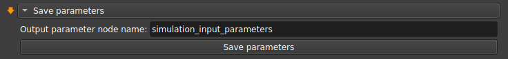
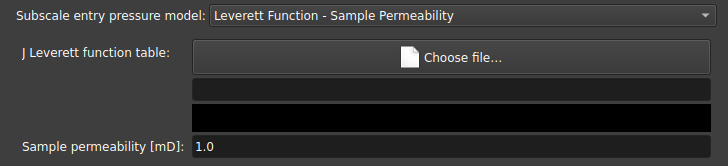

Extractor
Esse módulo é utilizado para extrair a rede de poros e ligações a partir de: uma segmentação individualizada dos poros (Label Map Volume) realizada por um algoritmo de watershed, gerando uma rede uniescalar; ou por um mapa de porosidades (Scalar Volume), que gerará um modelo multiescalar com poros resolvidos e não-resolvidos.
| Figura 1: Interface do módulo de Extração. |
Após a extração, ficará disponível na interface do GeoSlicer: as tabelas de poros e gargantas e também os modelos de visualização da rede. As tabelas geradas serão os dados usados na etapa seguinte de simulação.
 |
|---|
| Figura 1: A esquerda Label Map utilizado como entrada na extração e a direita rede uniescalar extraída. |
  |
|---|
| Figura 2: A esquerda Scalar Volume utilizado como entrada na extração e a direita rede multiescalar extraída, onde azul representa poros resolvidos, e rosa representa os poros não-resolvidos. |
Escala de Cores:
Esferas (Poros):
- Azul - Poro resolvido
- Magenta - Poro não resolvido
Cilindros (Gargantas):
- Verde - Garganta entre poros resolvidos
- Amarelo - Garganta entre um poro resolvido e um não resolvido
- Vermelho - Garganta entre poros não resolvidos
Simulation
Este módulo pode realizar diferentes tipos de simulações a partir dos resultados da tabela de poros e ligações (criada no módulo de Extração). As simulações incluem: One-phase, Two-phase, Mercury injection, explicados nas seções adiante.
Todas as simulações possuem os mesmos argumentos de entrada: A tabela de poros gerada a partir da extração da rede e quando o volume for multiescalar, o modelo subescala utilizado e sua parametrização.
 |
|---|
| Figura 1: Entrada da tabela de poros gerada com o módulo Extração. |
One-phase
A simulação de uma fase, é utilizada principalmente para determinar a propriedade de permeabilidade absoluta (\(K_{abs}\)) da amostra.
| Figura 2: Simulação de uma fase. |
Três diferentes solvers podem ser usados para esse tipo de simulação:
- pypardiso (recomendado) : rende os melhores resultados, convergindo mesmo em situações de raios muito discrepantes;
- pyflowsolver : inclui uma opção de seleção do critério de parada, porém com performance menor que o pypardiso;
- openpnm : opção mais tradicionalmente usada;
 |
|---|
| Figura 3: Opção pyflowsolver e critério de parada. As demais opções (pypardiso e openpnm) não possuem esse critério. |
Quando os valores de condutividade são muito discrepantes para a mesma amostra, e essa amostra percola mais pela subescala, podemos ter problemas na convergência para a solução, por conta disso, adicionamos uma opção para poder limitar os valores em altas condutividades.
 |
|---|
| Figura 4: Opções de limitação dos valores de condutividade. |
Além disso, a simulação de uma fase pode ser realizada em uma única direção, ou em múltiplas direções, a partir do parâmetro Orientation scheme.
| Figura 5: Esquema de orientação utilizado. |
Two-phase
A simulação de duas fases consiste em inicialmente injetar óleo na amostra e aumentar a pressão do mesmo afim de que esse invada praticamente todos os poros, num processo que é conhecido como drenagem (drainage). Após essa primeira etapa, substitui-se o óleo por água e novamente aumenta-se a pressão, de forma a permitir que a água invada alguns dos poros que antes estavam com óleo, expulsando o último, esse segundo processo é conhecido como embebição (imbibition). Ao medirmos a permeabilidade da rocha em relação a permeabilidade absoluta, em função da saturação de água durante esse processo, obtemos a curva conhecida como curva de permeabilidade relativa (\(K_{rel}\)).
Uma vez que cada rocha pode interagir físicamente ou quimicamente com o óleo e com a água de diferentes maneiras, precisamos de uma variedade bastante grande de parametros que permitam calibrar os resultados de forma a modelar e simplificar essa interação, afim de extrairmos algum significado físico das propriedades da rocha a partir da simulação. Abaixo, elencamos alguns parâmetros que podem ser encontrados na simulação de duas fases disponibilizada no GeoSlicer.
Atualmente, temos disponível no GeoSlicer dois algoritmos para realizar a simulação de duas fases, a primeira delas é a do PNFlow que é um algoritmo padrão utilizado, implementado em C++, e a segunda é um algoritmo próprio desenvolvido pela LTrace em linguagem Python.
Salvar/Carregar tabela de seleção de parâmetros
Para facilitar a reprodução de simulações que rodam no mesmo conjunto de parâmetros, a interface possui opções para salvar/carregar os parâmetros a partir de tabelas que são salvas junto ao projeto. Dessa forma, ao calibrar o conjunto de parâmetros, o usuário pode guardar essas informações para uma outra análise posterior, ou usar esses mesmos parâmetros em outra amostra.
|  |
|---|
| Figura 6: Opções para salvar/carregar tabelas de seleção de parâmetros. |
Fluid properties
Nessa seção é possível alterar os parâmetros dos fluidos (água e óleo) utilizados na simulação:
 |
|---|
| Figura 7: Entrada dos parâmetros dos fluidos (água e óleo). |
Contact angle options
Uma das principais propriedades que afetam a interação de um líquido com um sólido é a molhabilidade, essa pode ser determinada a partir do ângulo de contato formado pelo primeiro quando em contato com o último. Assim, se o ângulo de contato for próximo de zero há uma forte interação que "prende" o líquido ao sólido, já quando o ângulo de contato é próximo a 180º, a interação do líquido com a superfície é fraca e esse pode escoar com mais facilidade pela mesma.
 |
|---|
| Figura 8: Representação visual do conceito de molhabilidade e ângulo de contato. |
Modelamos os ângulos de contato a partir de duas distribuições usadas em momentos distintos: a Initial contact angle que controla o ângulo de contato dos poros antes da invasão por óleo; e a Equilibrium contact angle que controla o ângulo de contato após a invasão por óleo. Além das distribuições base utilizadas em cada caso, há uma opção para adicionar uma segunda distribuição para cada uma delas, assim cada poro é atrelado a uma das duas distribuições, com o parâmetro "Fraction" sendo usado para determinar qual a porcentagem de poros vão seguir a segunda distribuição em relação a primeira.
 |
|---|
| Figura 9: Parâmetros das distribuições de ângulo de contato. |
Cada distribuição de ângulos, seja primária ou secundária, inicial ou de equilíbrio, tem uma série de parâmetros que a descreve:
-
Model: permite modelar as curvas de histerese entre ângulos de avanço/recuo a partir dos ângulos intrínsicos:
- Equal angles: ângulos de avanço/recuo idênticos ao ângulo intrinsico;
- Constant difference: diferença constante dos ângulos de avanço/recuo em relação ao ângulo intrínsico;
- Morrow curve: curvas de avanço/recuo determinadas pelas curvas de Morrow;
 |
|---|
| Figura 10: Curvas para cada um dos modelos de ângulo de contato implementados no GeoSlicer. Imagem retirada de N. R. Morrow, 1975 (https://doi.org/10.2118/75-04-04). |
- Contact angle distribution center: Define o centro da distribuição de ângulo de contato;
- Contact angle distribution range: Alcance da distribuição (center-range/2, center+range/2), com o ângulo mínimo/máximo sendo 0º/180º, respectivamente;
- Delta, Gamma: Parâmetros da distribuição de Weibull truncada, se um número negativo é escolhido, usa uma distribuição uniforme; Se números positivos são escolhidos, usa a seguinte distribuição de probabilidades: \(p(\tilde\theta)=\frac{\gamma}{\delta}\frac{\tilde\theta^{\gamma-1}e^{-\tilde\theta^\gamma/\delta}}{1-e^{-1/\delta}}\) onde \(\tilde\theta\in[\theta_{min},\theta_{max}]\). Algumas ideias de parâmetros para essa distribuição são gráficados abaixo:
 |
|---|
| Figura 1: Distribuição de Weibull. |
- Contact angle correlation: Escolhe como o ângulo de contato será correlacionado ao raio dos poros: Positive radius define maiores ângulos de contato para raios maiores; Negative radius faz o oposto, atribuindo maiores ângulos para raios menores; Uncorrelated significa independência entre ângulos de contato com o raio do poro;
- Separation: Se o modelo escolhido for constant difference, define a separação entre ângulos de avanço e recuo;
Outros parâmetros estão definidos apenas para a segunda distribuição:
- Fraction: Um valor entre 0 e 1 que controla qual a fração dos poros usará a segunda distribuição ao invés da primeira;
- Fraction distribution: Define se a fração será determinada pela quantidade de poros ou volume total;
- Correlation diameter: Se a Fraction correlation for escolhida como Spatially correlated, define a distância mais provável de encontrar poros com mesma distribuição de ângulo de contato;
- Fraction correlation: Define como a fração para a segunda distribuição será correlacionada, se correlacionada espacialmente, para maiores poros, menores poros ou aleatória;
Simulation options
Essa seção de parâmetros é dedicada a controlar os parâmetros relacionados a própria simulação.
| Figura 12: Parâmetros da simulação. |
- Minimum SWi: Define o valor mínimo de SWi, interrompendo o ciclo de drenagem quando o valor de Sw é atingido (SWi pode ser maior se a água ficar presa);
- Final cycle Pc: Interrompe o ciclo quando essa pressão capilar é alcançada;
- Sw step length: Passo de Sw utilizado antes de verificar o novo valor de permeabilidade;
- Inject/Produce from: Define por quais lados o fluido será injetado/produzido ao longo do eixo z, o mesmo lado pode tanto injetar como também produzir;
- Pore fill: Determina qual mecanismo domina cada evento de preenchimento de poro individual;
- Lower/Upper box boundary: Poros com distância relativa no eixo Z da borda até este valor do plano são considerados poros "à esquerda"/"à direita", respectivamente;
- Subresolution volume: Considera que o volume contém essa fração de espaço poroso em subresolução que está sempre preenchido com água;
- Plot first injection cycle: Se selecionado, o primeiro ciclo, injeção de óleo em um meio totalmente saturado de água, será incluído no gráfico de saída. A simulação será executada, independentemente da opção estar selecionada ou não;
- Create animation node: Cria um nó de animação que pode ser usado na aba "Cycles Visualization";
- Keep temporary files: Mantém os arquivos .vtu na pasta de arquivos temporários do GeoSlicer, um arquivo para cada etapa da simulação;
- Max subprocesses: Quantidade máxima de subprocessos single-thread que devem ser executados; O valor recomendado para uma máquina ociosa é 2/3 do total de núcleos;
Uma vez que temos uma vasta quantidade de parâmetros que podem ser modificados para modelar o experimento a partir da simulação, se torna útil variarmos tais parâmetros de forma mais sistemática para uma análise aprofundada da sua influência nos resultados obtidos.
Para isso o usuário pode selecionar o botão "Multi" disponível em grande parte dos parâmetros, ao clicar em Multi, três caixas aparecem com opções de início, fim e passo, que podem ser usadas para rodar diversas simulações em uma tabela linearmente distribuída dos valores desses parâmetros. Se mais de um parâmetro é escolhido com múltiplos valores, simulações rodam com todas as combinações de parâmetros possíveis, isso pode aumentar consideravelmente a quantidade de simulações e o tempo para executar.
Ao finalizar a execução do conjunto de simulações, o usuário pode realizar análises para entender as relações entre os resultados das simulações com os parâmetros escolhidos na aba Krel EDA.
Mercury injection
Além das simulações de uma e duas fases, também temos disponível nesse módulo uma simulação do experimento de intrusão de Mercúrio.
| Figura 13: Simulação de intrusão de Mercúrio. |
A intrusão de mercúrio é um experimento no qual mercúrio líquido é injetado em uma amostra de rocha reservatório sob vácuo, com pressão crescente. O volume de mercúrio invadindo a amostra é medido em função da pressão de mercúrio. Uma vez que o ângulo de contato do mercúrio líquido com o vapor de mercúrio é aproximadamente independente do substrato, é possível utilizar modelos analíticos, como o modelo do feixe de tubos, para calcular a distribuição do tamanho dos poros da amostra.
O ensaio de intrusão de mercúrio é relativamente acessível e sua principal relevância no contexto do PNM reside na capacidade de executar a simulação em uma amostra para a qual os resultados experimentais de curvas de Pressão Capilar por Intrusão de Mercúrio (MICP) estão disponíveis. Isso permite a comparação dos resultados para validar e calibrar a rede de poros extraída da amostra, que será usada nas simulações de uma e duas fases.
Para facilitar as análises da atribuição dos raios dos poros sub-resolução, o código presente no GeoSlicer produzirá como saída, além dos gráficos obtidos pela simulação no OpenPNM, os gráficos das distribuições de raios de poros e gargantas e também das distribuições de volumes, separando em poros resolvidos (que não se alteram pela atribuição da subescala) e poros não resolvidos. Dessa forma, o usuário pode conferir se o modelo de subescala foi aplicado corretamente.
Modelo Subscala
No caso da rede multiescalar, como os raios da subescala não podem ser determinados a partir da própria imagem, por estarem fora da resolução, é necessário definir um modelo para atribuição desses raios. Algumas opções disponíveis atualmente são:
-
Fixed radius: Todos os raios da subresolução tem o mesmo tamanho escolhido na interface;

-
Leverett Function - Sample Permeability: Atribui uma pressão de entrada com base na curva de J Leverett com base na permeabilidade da amostra; 
-
Leverett Function - Permeability curve: Também utiliza a curva de J Leverett mas com uma curva definida para a permeabilidade ao invés de um valor;

-
Pressure Curve e Throat Radius Curve: Atribui os raios da subresolução com base na curva obtida por um experimento de injeção de mercúrio. Pode ser utilizado o dado da pressão de entrada pela fração do volume, ou então o raio equivalente em função da fração de volume;

O modelo de subescala escolhido não tem impacto nas simulações de redes uniescalares, uma vez que todos os raios já estão determinados.
Kabs REV
O módulo Pore Network Kabs REV permite executar simulações de uma única fase (permeabilidade absoluta) em múltiplos cortes do volume utilizando a rede de poros.
Ele pode ser usado para avaliar a qualidade na previsão da medida de permeabilidade absoluta, afim de descobrir qual o mínimo tamanho de volume necessário para suprimir o erro devido ao tamanho finito.

- Input: Espera como entrada um mapa de porosidades gerado a partir do módulo Microporosity seja por saturação ou por segmentação. Caso a entrada seja um mapa de porosidade considerará o modelo multiescala. Também é permitido que o input seja um LabelMap gerado através do módulo Segment Inspector, nesse caso será considerado um modelo de escala simples, e o campo das propriedades Subscala pode ser ignorado.
Parâmetros (Parameters)
- Number of lengths: número de amostras de comprimento (ou cortes) a serem consideradas na simulação;
- Min. length fraction (%): fração mínima de comprimento, em porcentagem, para definição dos cortes;
Os demais parâmetros são equivalentes aos do módulo que realiza a simulação de permeabilidade absoluta. Leia mais no módulo PNM Simulation.
Cycles Visualization
Esse módulo serve para controlar e visualizar as simulações de permeabilidade relativa criadas no módulo Pore Network Simulation com a opção "Create animation node" ativada.
| Figura 1: Entrada do nó de animação para visualização. |
Ao selecionar o nó de animação, aparecerá na visualização 3D um modelo dos poros e ligações com setas nas regiões de inlet/outlet, indicando o sentido das invasões. Além disso os gráficos na seção "Information" mostraram as curvas do Krel e algumas informações extras.
| Figura 3: Curvas de permeabilidade relativa para o ciclo. |
A partir da seção parâmetros na interface, o usuário pode então controlar a animação.
| Figura 3: Interface de seleção de parâmetros. |
- Show zero log Krel: Coloca um valor não-nulo para os pontos na escala logarítmica;
- Animations step: Seleciona um passo de tempo específico na animação;
- Run animation: Atualiza incrementalmente o passo da simulação de forma automática;
- Loop animation: Executa a atualização em loop, voltando ao início sempre que chegar ao fim;
- Animation speed: Escolhe a velocidade da atualização automática;
Krel EDA
EDA
Para facilitar a análise do conjunto de simulações e entender como os diferentes parâmetros afetam os resultados obtidos, foi criado o módulo do Krel EDA.
Após rodar diversas simulações usando o módulo Pore Network Simulation o usuário pode colocar como entrada a tabela com os resultados obtidos nesse módulo, para assim visualizar os gráficos da nuvem de curvas, e também fazer um pós-processamento dos seus resultados.
| Figura 1: Entrada do módulo Krel EDA. |
Diversas ferramentas foram criadas para facilitar essas análises a partir de gráficos interativos.
Krel curves dispersion
Ao selecionar o tipo de visualização como "Krel curves dispersion", será mostrado o gráfico de dispersão das curvas de krel das várias simulações, com a respectiva média dessas curvas.
É possível escolher, através das caixas seletoras localizadas logo acima do gráfico, quais tipos de curva serão mostrados: curvas de drenagem ou embibição e curvas de água e óleo separadamente.
 |
|---|
| Figura 2: Nuvem de curvas Krel. |
Para entender como se dá a distribuição dessas curvas conforme algum dos parâmetros, pode ser selecionado em "Curves color scale" uma escala de cores para as curvas.
Filtragem e adição de curvas de referência
Também é possível filtrar a nuvem de curvas para mostrar apenas uma parte dos dados a partir do colapsável nomeado "Simulation filters":
 |
|---|
| Figura 3: Nuvem de curvas Krel filtradas e com curva de referência. |
Ali é possível adicionar um filtro com base em algum parâmetro, e também adicionar uma curva de referência, que pode ser o dado experimental por exemplo, para comparação.
Crossed error
Esse tipo de visualização é indicado para comparar a correlação entre os erros nas medidas com algum parâmetro indicado pela escala de cores. A interface permite selecionar o erro de qual medida nos eixos x e y, e também qual parâmetro será indicado na escala de cores.
 |
|---|
| Figura 4: Parâmetros da visualização de erro cruzado. |
Crossed parameters
Esse tipo de visualização serve para comparar a correlação entre os parâmetros com o erro indicado pela escala de cores. A interface permite selecionar qual parâmetro será colocado nos eixos x e y, e também qual erro será indicado na escala de cores.
| Figura 5: Parâmetros da visualização de parâmetros cruzados. |
Parameters and Result correlation
Nessa visualização, o usuário pode checar as correlações entre os resultados obtidos da simulação com os parâmetros colocados como entrada no algoritmo, assim pode-se saber quais dos parâmetros mais afetam os resultados.
| Figura 6: Correlação entre parâmetros e resultados. |
Parameters and Error correlation
Da mesma forma, pode-se querer olhar para as correlações existentes entre os parâmetros e os erros da simulação. Esse tipo de visualização demonstra essa matriz de correlação.
| Figura 7: Correlação entre parâmetros e erros. |
Results selfcorrelation
Para entender como os resultados se correlacionam entre si, ou seja, como a permeabilidade está sendo afetada pela saturação ou pela pressão obtidas na simulação, pode-se olhar para a matriz de autocorrelação dos resultados, apresentada nessa visualização.
| Figura 8: Matriz de autocorrelação dos resultados. |
Higher order interactions
Na análise estatística, podemos também querer entender como são os coeficientes de confiabilidade da correlação, que representam interações de ordens mais altas do que a correlação. Estão disponíveis 3 tipos de visualização para interpretar essas dependência de ordem mais altas: "Second order interactions", "Second order interactions list", "Third order interactions list".
 |
|---|
| Figura 9: Interações de segunda ordem. |
Import
A aba Import pode ser usada para trazer resultados de uma tabela experimental (por exemplo) com curvas de krel, ao selecionar as colunas correspondentes a saturação, permeabilidade da água, permeabilidade do óleo e o ciclo, o usuário pode salvar uma tabela para ser usada no módulo EDA.
 |
|---|
| Figura 10: Aba Import. |
Production Prediction
Esse módulo pode ser usado para estimar a quantidade de óleo que pode efetivamente ser extraído para uma dada amostra a partir da curva de permeabilidade relativa, usando a equação de Buckley-Leverett.
Single Krel
A primeira opção disponível usa a curva de permeabilidade relativa construída para uma única simulação de duas fases.
| Figura 1: Parâmetros do módulo de produção. |
Na interface, além da tabela com os resultados da simulação o usuário pode escolher os valores de viscosidade da água e do óleo que serão usados na estimativa, além de um fator de suavização da curva de krel.
| Figura 2: Curva de estimativa de produção para simulação única. |
Os gráficos gerados correspondem então a curva da estimativa de produção de óleo (em volume produzido) com base na quantidade de água injetada. E abaixo a curva de permeabilidade relativa com indicação da onda de choque estimada.
Teste de sensibilidade
A outra opção pode ser usada quando múltiplas curvas de permeabilidade relativa são geradas.
Nesse caso uma nuvem de curvas será gerada e o algoritmo calcula também as previsões: otimista, pessimista e neutra.
| Figura 3: Curva de estimativa de produção para o teste de sensibilidade. |
Fluxos
Simulação de Permeabilidade Absoluta (Kabs)
Simulação Kabs em escala única
O fluxo abaixo permite simular e obter um estimado da permeabilidade absoluta, em uma amostra de escala única, considerando todos os poros como resolvidos:
- Carregue o volume no qual deseja executar a simulação;
- Realize a Segmentação Manual utilizando um dos segmentos para designar a região porosa da rocha;
- Separe os segmentos utilizando a aba Inspector, delimitando assim a região de cada um dos poros;
- Utilize a aba Extraction para obter a rede de poros e ligações a partir do volume LabelMap gerado;
- Na aba Simulation para rodar a simulação de Kabs;
Simulação de Permeabilidade Relativa (Krel)
Simulação única de Krel (animação)
O fluxo abaixo permite simular e obter uma animação dos processos de Drenagem e Embibição:
- Carregue o volume no qual deseja executar a simulação;
- Realize a Segmentação Manual utilizando um dos segmentos para designar a região porosa da rocha;
- Separe os segmentos utilizando a aba Inspector, delimitando assim a região de cada um dos poros;
- Utilize a aba Extraction para obter a rede de poros e ligações a partir do volume LabelMap gerado;
- Na aba Simulation;
- Marque a opção "Create animation node" na caixa "Simulation options" e clique no botão "Apply";
- Ao finalizar a simulação, vá até a aba "Cycles Visualization" e selecione o nó de animação para visualizar o ciclo e a curva gerada;
Teste de Sensibilidade
O fluxo abaixo permite que o usuário simule e obtenha uma nuvem de curvas de Krel na qual ele pode fazer diferentes análises para determinar as propriedades que são mais sensíveis:
- Carregue o volume no qual deseja executar a simulação;
- Realize a Segmentação Manual utilizando um dos segmentos para designar a região porosa da rocha;
- Separe os segmentos utilizando a aba Inspector, delimitando assim a região de cada um dos poros;
- Utilize a aba Extraction para obter a rede de poros e ligações a partir do volume LabelMap gerado;
- Na aba Simulation, escolha a tabela de poros, no seletor Simulation selecione "Two-phase";
- Selecione múltiplos valores para alguns parâmetros clicando no botão "Multi" (como fizemos para o centro das distribuições dos ângulos de contato no vídeo) - Você pode encontrar mais informações sobre os parâmetros na seção "Two-phase";
- (Opcional) Salve os parâmetros selecionados usando a seção "Save parameters";
- Clique no botão "Apply" para rodar as várias simulações;
- Ao finalizar a execução, vá até a aba "Krel EDA" e selecione a tabela de parâmetros gerada para fazer diferentes análises usando os recursos de visualização da interface (nuvem de curvas, correlações de parâmetros e resultados, etc);
Estimativa de Produção
O fluxo abaixo permite que o usuário simule e obtenha uma nuvem de curvas de Krel, em uma amostra de escala única:
- Carregue o volume no qual deseja executar a simulação;
- Realize a Segmentação Manual utilizando um dos segmentos para designar a região porosa da rocha;
- Separe os segmentos utilizando a aba Inspector, delimitando assim a região de cada um dos poros;
- Utilize a aba Extraction para obter a rede de poros e ligações a partir do volume LabelMap gerado;
- Selecione múltiplos valores para alguns parâmetros clicando no botão "Multi" (como fizemos para o centro das distribuições dos ângulos de contato no vídeo) - Você pode encontrar mais informações sobre os parâmetros na seção "Two-phase";
- (Opcional) Salve os parâmetros selecionados usando a seção "Save parameters";
- Clique no botão "Apply" para rodar as várias simulações;
- Ao finalizar a execução, vá até a aba "Production Prediction" e selecione a tabela de parâmetros gerada na simulação; Duas opções são disponíveis nessa interface:
- A primeira delas "Single Krel" é uma análise de cada simulação individual;
- A segunda "Sensitivity test" é uma estimativa da produção levando em conta todas as simulações feitas;
Simulação de Intrusão por Mercúrio
Simulação de MICP
O fluxo abaixo permite simular o experimento de Intrusão por Mercúrio na amostra:
- Carregue o volume no qual deseja executar a simulação;
- Realize a Segmentação Manual utilizando um dos segmentos para designar a região porosa da rocha;
- Separe os segmentos utilizando a aba Inspector, delimitando assim a região de cada um dos poros;
- Utilize a aba Extraction para obter a rede de poros e ligações a partir do volume LabelMap gerado;
- Na aba Simulation, escolha a tabela de poros, no seletor Simulation selecione Mercury injection;
- Ao finalizar a simulação, os resultados podem ser visualizados na tabela gerada ou então nos gráficos criados;
Geração de relatórios
O fluxo abaixo permite rodar um fluxo completo do PNM, realizando simulações de Kabs, Krel e MICP; Os resultados podem ser visualizados em uma interface web:
- Carregue o volume no qual deseja executar a simulação;
- Realize a Segmentação Manual utilizando um dos segmentos para designar a região porosa da rocha;
- Separe os segmentos utilizando a aba Inspector, delimitando assim a região de cada um dos poros;
- Utilize a aba Microtom e selecione "PNM Complete Workflow";
- Selecione ou crie uma tabela de seleção de parâmetros do "Teste de Sensibilidade" clicando no botão "Edit";
- Clique em "Apply" para rodar o fluxo;
- Ao finalizar a simulação, clique no botão "Open Report Locally" para abrir o relatório.